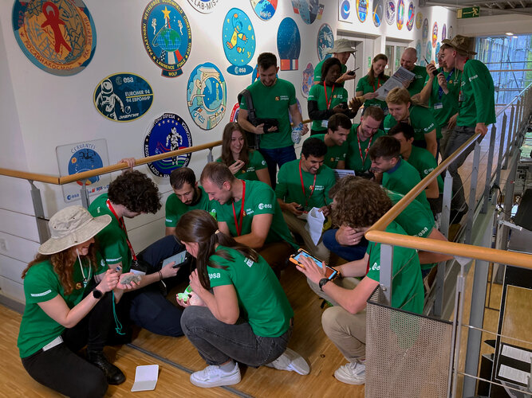

Science & Exploration
Latest
All
Stories
Videos
Images
Image
Science & Exploration
Moon science generation
30/09/2022
872
views
47
likes

View
Story
Science & Exploration
Webb and Hubble capture detailed views of DART impact
29/09/2022
9334
views
95
likes
Read
Image
Science & Exploration
Webb’s icy instrument reveals complex structures
27/09/2022
16726
views
279
likes
View
Story
Science & Exploration
ESA lunar landing camera to fly to the Moon
23/09/2022
1717
views
38
likes
Read
Image
Science & Exploration
Pillar of light
22/09/2022
4651
views
106
likes
View
Story
Science & Exploration
New Webb image captures clearest view of Neptune’s rings in…
21/09/2022
35407
views
318
likes
Read
Story
Science & Exploration
Weightless on Earth with Vivaldi
21/09/2022
1331
views
64
likes
Read
Story
Science & Exploration
Webb's Mid-InfraRed Instrument (MIRI) operations update
20/09/2022
32345
views
130
likes
Read
Story
Science & Exploration
Watch live: ESA astronaut Samantha Cristoforetti calls Inte…
20/09/2022
1585
views
52
likes
Read
Story
Science & Exploration
Mars is mighty in first Webb observations of Red Planet
19/09/2022
38126
views
202
likes
Read
Image
Science & Exploration
Alex on the rocks
12/09/2022
1179
views
65
likes
View
Video
00:02:54
Science & Exploration
Euclid gains solar power and protection
01/06/2022
2130
views
80
likes
Play
Video
00:06:28
Science & Exploration
Crew-4 arrive at Kennedy Space Center
20/04/2022
5896
views
70
likes
Play
Video
00:00:57
Science & Exploration
Science with Webb: the nearby cosmos
10/12/2021
4129
views
96
likes
Play
Video
00:01:00
Science & Exploration
Science with Webb: seeing farther
25/11/2021
5172
views
129
likes
Play
More items
More
Programmes
Space Science
Human and Robotic Exploration
Astronauts
Samantha Cristoforetti
Alexander Gerst
Matthias Maurer
Andreas Mogensen
Luca Parmitano
Tim Peake
Thomas Pesquet
Missions
Webb
Solar Orbiter
Juice
Cheops
BepiColombo
ExoMars
Gaia
More missions
Activities
International Space Station
Orion service module
Gateway
Concordia
Caves & Pangaea
European Space Agency
 Science & Exploration
Science & Exploration